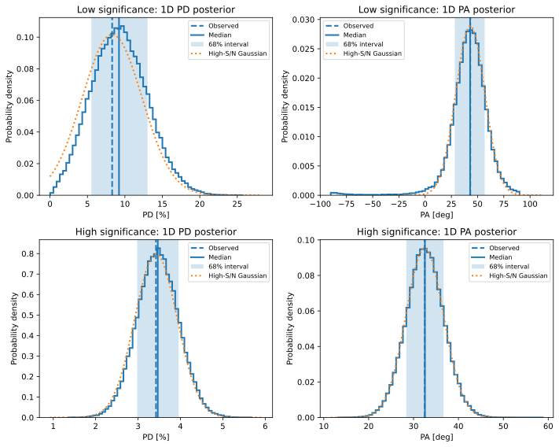
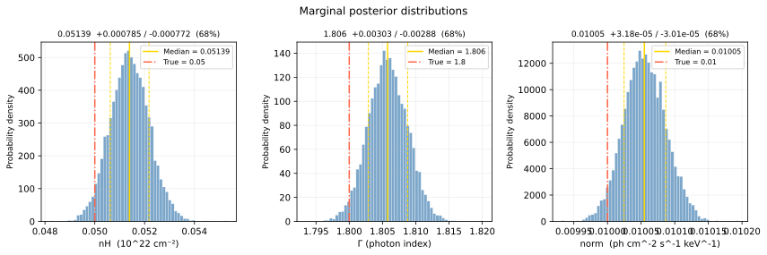
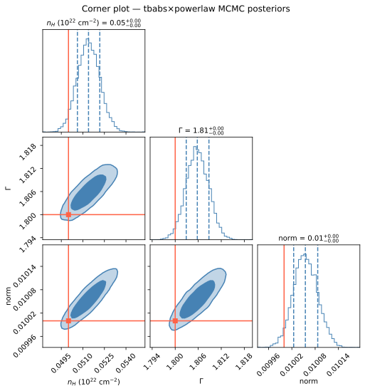

Monte-Carlo simulation in X-ray data analysis#
Contact: Honghui Liu (honghui.liu<at>uni-tuebingen.de)
import numpy as np
import emcee
import matplotlib.pyplot as plt
from astropy.io import fits
import matplotlib_inline
#set_matplotlib_formats('svg')
matplotlib_inline.backend_inline.set_matplotlib_formats("svg")
Case I: Stokes parameters and uncertainties for X-ray linear polarization#
(generated by ChatGPT)
In an event-based X-ray polarization analysis, each photon has a reconstructed photoelectron emission angle \(\phi_i\). In this note, we use the convention with the extra factor of 2 in the event-level Stokes parameters:
If event weights \(w_i\) are used, the binned Stokes parameters are
For unweighted events, \(w_i=1\), so
The normalized Stokes parameters are
With this factor-2 convention, the measured modulation amplitude is
For a detector with modulation factor \(\mu\), the polarization degree is
where \(\mu\) is the modulation factor. If \(Q\) and \(U\) have already been corrected for the modulation factor, then one can simply use
The polarization angle is
The factor \(1/2\) appears because linear polarization has a \(180^\circ\) symmetry.
Uncertainties on \(I,Q,U\)#
For weighted events, the variances can be estimated as
The covariances are
For unweighted events and weak polarization, the approximate results are
and
Therefore,
Uncertainties on normalized Stokes parameters \(q\) and \(u\)#
The normalized Stokes parameters are
Using error propagation, the variance of \(q\) is
Equivalently, since \(q=Q/I\),
Similarly,
The covariance between \(q\) and \(u\) is
If the covariances between \(I,Q,U\) are negligible, then
If \(q\ll1\), \(u\ll1\), and the source is weakly polarized, the terms involving \(q^2\), \(u^2\), and \(qu\) are small. Then
For unweighted events with \(I=N\), using the factor-2 convention,
Exact error propagation from \(q,u\) to \(PD,PA\)#
Define
With the factor-2 convention,
For compactness, define
Then
If the modulation correction has already been applied, use \(k=1\).
The derivatives of \(PD\) are
Therefore, the propagated uncertainty on \(PD\) is
The polarization angle is
The derivatives are
Therefore, the propagated uncertainty on \(PA\) is
This gives \(\sigma_{PA}\) in radians. To convert to degrees,
High-significance approximation#
At high significance, the posterior in the \(q-u\) plane is approximately Gaussian and far from the origin. If
and
then the uncertainty on
is approximately
Since
the uncertainty on \(PD\) is
For the factor-2 convention,
so
If the data products are already corrected so that \(PD=\sqrt{q^2+u^2}\), then \(k=1\), and
For the polarization angle, the high-significance approximation gives
Since
this can also be written as
This expression is in radians. In degrees,
Numerically,
Thus, for example, if
and
then
Important caveat at low significance#
The high-significance approximation is valid only when the measured polarization is well separated from the origin in the \(q-u\) plane. When
the distribution of \(PD\) becomes non-Gaussian and biased upward because
The polarization angle may also become poorly constrained because \(PA\) is undefined at
Therefore, at low significance, it is better to perform statistical inference in the \(q-u\) plane, or equivalently in the \(I,Q,U\) space, and then transform the posterior samples to \(PD\) and \(PA\).
# ============================================================
# Basic polarization relations
# ============================================================
def qu_from_pdpa(pd, pa_deg):
"""
Convert polarization degree and angle to normalized Stokes q,u.
PA is in degrees.
q = PD cos(2 PA)
u = PD sin(2 PA)
"""
pa = np.deg2rad(pa_deg)
q = pd * np.cos(2.0 * pa)
u = pd * np.sin(2.0 * pa)
return q, u
def pdpa_from_qu(q, u):
"""
Convert normalized Stokes q,u to polarization degree and angle.
PD = sqrt(q^2 + u^2)
PA = 0.5 atan2(u, q)
PA is returned in degrees in the range [-90, 90).
"""
pd = np.sqrt(q**2 + u**2)
pa = 0.5 * np.rad2deg(np.arctan2(u, q))
# Optional: keep PA in [-90, 90)
pa = ((pa + 90.0) % 180.0) - 90.0
return pd, pa
# ============================================================
# Gaussian likelihood in q,u
# ============================================================
def log_likelihood_qu(theta, q_obs, u_obs, cov):
"""
Gaussian likelihood in the measured q,u plane.
theta = [q, u]
"""
q, u = theta
diff = np.array([q - q_obs, u - u_obs])
inv_cov = np.linalg.inv(cov)
return -0.5 * diff @ inv_cov @ diff
def log_prior_qu(theta):
"""
Simple broad physical prior.
We require PD <= 1.
For most X-ray polarization measurements this boundary is irrelevant.
"""
q, u = theta
pd = np.sqrt(q**2 + u**2)
if pd <= 1.0:
return 0.0
else:
return -np.inf
def log_posterior_qu(theta, q_obs, u_obs, cov):
lp = log_prior_qu(theta)
if not np.isfinite(lp):
return -np.inf
return lp + log_likelihood_qu(theta, q_obs, u_obs, cov)
def run_emcee_mcmc(
q_obs,
u_obs,
cov,
n_walkers=32,
n_steps=10000,
burn=2000,
seed=1,
):
"""
Run an emcee ensemble MCMC chain in q,u.
Parameters
----------
q_obs, u_obs : float
Observed normalized Stokes parameters.
cov : 2x2 array
Covariance matrix of q,u.
n_walkers : int
Number of emcee walkers. Should be at least 2 * ndim.
Here ndim = 2, so n_walkers >= 4, but 32 or 64 is safer.
n_steps : int
Number of MCMC steps per walker.
burn : int
Number of initial steps to discard.
seed : int
Random seed.
Returns
-------
samples : array
Flattened post-burn-in samples with shape
((n_steps - burn) * n_walkers, 2).
logp : array
Flattened log posterior values.
sampler : emcee.EnsembleSampler
The full emcee sampler object.
"""
rng = np.random.default_rng(seed)
ndim = 2
# --------------------------------------------------------
# Initial walker positions
# --------------------------------------------------------
# Start walkers around the observed q,u point.
# The scatter is chosen from the measurement covariance.
p0 = rng.multivariate_normal(
mean=np.array([q_obs, u_obs]),
cov=cov,
size=n_walkers,
)
# Make sure initial walkers satisfy the physical prior PD <= 1
for i in range(n_walkers):
pd = np.sqrt(p0[i, 0]**2 + p0[i, 1]**2)
while pd > 1.0:
p0[i] = rng.multivariate_normal(
mean=np.array([q_obs, u_obs]),
cov=cov,
)
pd = np.sqrt(p0[i, 0]**2 + p0[i, 1]**2)
# --------------------------------------------------------
# Build and run emcee sampler
# --------------------------------------------------------
sampler = emcee.EnsembleSampler(
n_walkers,
ndim,
log_posterior_qu,
args=(q_obs, u_obs, cov),
)
sampler.run_mcmc(p0, n_steps, progress=True)
# --------------------------------------------------------
# Extract post-burn-in samples
# --------------------------------------------------------
samples = sampler.get_chain(discard=burn, flat=True)
logp = sampler.get_log_prob(discard=burn, flat=True)
try:
tau = sampler.get_autocorr_time()
print("Autocorrelation time:", tau)
print("Chain length / tau:", 10000 / tau)
except emcee.autocorr.AutocorrError as e:
print("Autocorrelation time estimate failed:")
print(e)
return samples, logp, sampler
# ============================================================
# Simple Metropolis-Hastings MCMC sampler
# ============================================================
def run_mh_mcmc(
q_obs,
u_obs,
cov,
n_steps=100_000,
burn=20_000,
proposal_scale=1.0,
seed=1,
):
"""
Run a simple Metropolis-Hastings chain in q,u.
The proposal is a Gaussian centered on the current point.
proposal_cov = proposal_scale^2 * cov
"""
rng = np.random.default_rng(seed)
proposal_cov = proposal_scale**2 * cov
chain = np.zeros((n_steps, 2))
logp = np.zeros(n_steps)
# Start at the observed point
current = np.array([q_obs, u_obs])
current_logp = log_posterior_qu(current, q_obs, u_obs, cov)
n_accept = 0
for i in range(n_steps):
proposal = rng.multivariate_normal(current, proposal_cov)
proposal_logp = log_posterior_qu(proposal, q_obs, u_obs, cov)
log_alpha = proposal_logp - current_logp
if np.log(rng.uniform()) < log_alpha:
current = proposal
current_logp = proposal_logp
n_accept += 1
chain[i] = current
logp[i] = current_logp
samples = chain[burn:]
acceptance = n_accept / n_steps
return samples, logp, acceptance
# ============================================================
# One experiment: simulate q,u measurement and run MCMC
# ============================================================
def run_case(label, pd_true, pa_true_deg, sigma_q, sigma_u, rho=0.0, seed=1):
"""
Simulate one measurement and run MCMC.
sigma_q and sigma_u are uncertainties on normalized q,u.
rho=0.0: covariance between q and u is zero.
"""
rng = np.random.default_rng(seed)
q_true, u_true = qu_from_pdpa(pd_true, pa_true_deg)
cov = np.array([
[sigma_q**2, rho * sigma_q * sigma_u],
[rho * sigma_q * sigma_u, sigma_u**2],
])
q_obs, u_obs = rng.multivariate_normal([q_true, u_true], cov)
# samples_qu, logp, acc = run_mh_mcmc(
# q_obs,
# u_obs,
# cov,
# n_steps=120_000,
# burn=20_000,
# proposal_scale=1.0,
# seed=seed + 100,
# )
samples_qu, logp, sampler = run_emcee_mcmc(
q_obs,
u_obs,
cov,
n_walkers=32,
n_steps=10000,
burn=2000,
seed=seed + 100,
)
q_samp = samples_qu[:, 0]
u_samp = samples_qu[:, 1]
pd_samp, pa_samp = pdpa_from_qu(q_samp, u_samp)
pd_obs, pa_obs = pdpa_from_qu(q_obs, u_obs)
return {
"label": label,
"pd_true": pd_true,
"pa_true_deg": pa_true_deg,
"q_true": q_true,
"u_true": u_true,
"q_obs": q_obs,
"u_obs": u_obs,
"pd_obs": pd_obs,
"pa_obs": pa_obs,
"cov": cov,
"samples_qu": samples_qu,
"pd_samples": pd_samp,
"pa_samples": pa_samp,
#"acceptance": acc,
"acceptance": np.mean(sampler.acceptance_fraction),
"sigma_q": sigma_q,
"sigma_u": sigma_u,
}
# ============================================================
# Plotting helpers
# ============================================================
def plot_qu_panel(ax, q_obs, u_obs, cov, samples, title):
"""
Plot posterior samples in q,u plane.
"""
ax.scatter(samples[::20, 0], samples[::20, 1], s=2, alpha=0.15, color="grey")
ax.scatter(q_obs, u_obs, marker="x", s=80, label="Observed")
ax.scatter(0, 0, marker="+", s=80, label="Unpolarized")
# Draw 1, 2, 3 sigma Gaussian contours
eigvals, eigvecs = np.linalg.eigh(cov)
angles = np.linspace(0, 2 * np.pi, 400)
for nsig in [1, 2, 3]:
circle = np.vstack([np.cos(angles), np.sin(angles)])
ellipse = eigvecs @ np.diag(np.sqrt(eigvals)) @ circle
ellipse *= nsig
ax.plot(q_obs + ellipse[0], u_obs + ellipse[1], lw=1)
ax.set_aspect("equal", adjustable="box")
ax.set_xlabel(r"$q = Q/I$")
ax.set_ylabel(r"$u = U/I$")
ax.set_title(title)
ax.legend(fontsize=8)
def plot_pdpa_panel(ax, pd_samples, pa_samples, pd_obs, pa_obs,
sigma_pd_simple=None, sigma_pa_simple=None,
title=""):
"""
Plot transformed posterior samples in PD, PA plane.
"""
ax.scatter(100 * pd_samples[::20], pa_samples[::20], s=2, alpha=0.15, color="grey")
ax.scatter(100 * pd_obs, pa_obs, marker="x", s=80, label="Observed")
if sigma_pd_simple is not None and sigma_pa_simple is not None:
ax.errorbar(
100 * pd_obs,
pa_obs,
xerr=100 * sigma_pd_simple,
yerr=sigma_pa_simple,
fmt="o",
capsize=4,
label="High-S/N analytic approx.",
)
ax.set_xlabel(r"$PD$ [%]")
ax.set_ylabel(r"$PA$ [deg]")
ax.set_title(title)
ax.legend(fontsize=8)
def plot_pdpa_polar_panel(
ax,
pd_samples,
pa_samples,
pd_obs,
pa_obs,
sigma_pd_simple=None,
sigma_pa_simple=None,
title="",
):
"""
Plot the transformed posterior in the PD-PA plane using polar coordinates.
Radius:
r = PD
Polar angle:
theta = 2 PA
This is the most natural convention for linear polarization because
q = PD cos(2 PA)
u = PD sin(2 PA)
PA is shown on the angular labels, but internally the polar angle is 2 PA.
"""
# Convert PA to plotting angle theta = 2 PA
theta_samples = np.deg2rad(2.0 * pa_samples)
theta_obs = np.deg2rad(2.0 * pa_obs)
# Scatter posterior samples
ax.scatter(
theta_samples[::20],
100.0 * pd_samples[::20],
s=2,
alpha=0.15,
color="grey",
)
# Observed point
ax.scatter(
theta_obs,
100.0 * pd_obs,
marker="x",
s=80,
label="Observed",
)
# Optional high-significance analytic approximation
if sigma_pd_simple is not None and sigma_pa_simple is not None:
# Draw approximate 1-sigma ellipse in local PD-PA coordinates
t = np.linspace(0, 2 * np.pi, 300)
pd_ellipse = pd_obs + sigma_pd_simple * np.cos(t)
pa_ellipse = pa_obs + sigma_pa_simple * np.sin(t)
theta_ellipse = np.deg2rad(2.0 * pa_ellipse)
ax.plot(
theta_ellipse,
100.0 * pd_ellipse,
lw=2,
label="High-S/N analytic approx.",
)
ax.set_title(title)
# Radius label
ax.set_ylabel("PD [%]")
# Show PA labels instead of raw 2PA labels
# The polar coordinate angle is 2PA, but the tick labels are PA.
pa_tick_labels = np.array([-90, -60, -30, 0, 30, 60, 90])
theta_tick_positions = np.deg2rad(2.0 * pa_tick_labels)
# Convert to [0, 2pi)
theta_tick_positions = theta_tick_positions % (2.0 * np.pi)
ax.set_xticks(theta_tick_positions)
ax.set_xticklabels([f"{pa:d}°" for pa in pa_tick_labels])
ax.set_theta_zero_location("E")
ax.set_theta_direction(1)
ax.grid(True)
ax.legend(fontsize=8, loc="upper right")
def plot_pd_1d_panel(ax, pd_samples, pd_obs, sigma_pd_simple=None, title=""):
"""
Plot the 1D posterior distribution of PD.
"""
ax.hist(
100.0 * pd_samples,
bins=60,
density=True,
histtype="step",
lw=2,
)
ax.axvline(
100.0 * pd_obs,
ls="--",
lw=2,
label="Observed",
)
# Median and 68% credible interval
pd_med = np.percentile(pd_samples, 50.0)
pd_lo, pd_hi = np.percentile(pd_samples, [16.0, 84.0])
ax.axvline(100.0 * pd_med, lw=2, label="Median")
ax.axvspan(
100.0 * pd_lo,
100.0 * pd_hi,
alpha=0.2,
label="68% interval",
)
# Optional high-significance Gaussian approximation
if sigma_pd_simple is not None:
x = np.linspace(
max(0.0, 100.0 * (pd_obs - 5.0 * sigma_pd_simple)),
100.0 * (pd_obs + 5.0 * sigma_pd_simple),
500,
)
mu = 100.0 * pd_obs
sig = 100.0 * sigma_pd_simple
y = np.exp(-0.5 * ((x - mu) / sig) ** 2)
y /= np.trapz(y, x)
ax.plot(
x,
y,
ls=":",
lw=2,
label="High-S/N Gaussian",
)
ax.set_xlabel("PD [%]")
ax.set_ylabel("Probability density")
ax.set_title(title)
ax.legend(fontsize=8)
def plot_pa_1d_panel(ax, pa_samples, pa_obs, sigma_pa_simple=None, title=""):
"""
Plot the 1D posterior distribution of PA.
PA is assumed to be in degrees in the range [-90, 90).
"""
ax.hist(
pa_samples,
bins=60,
density=True,
histtype="step",
lw=2,
)
ax.axvline(
pa_obs,
ls="--",
lw=2,
label="Observed",
)
# Median and 68% credible interval
# This simple percentile calculation is fine when PA is localized
# and does not wrap around the -90/90 boundary.
pa_med = np.percentile(pa_samples, 50.0)
pa_lo, pa_hi = np.percentile(pa_samples, [16.0, 84.0])
ax.axvline(pa_med, lw=2, label="Median")
ax.axvspan(
pa_lo,
pa_hi,
alpha=0.2,
label="68% interval",
)
# Optional high-significance Gaussian approximation
if sigma_pa_simple is not None:
x = np.linspace(
pa_obs - 5.0 * sigma_pa_simple,
pa_obs + 5.0 * sigma_pa_simple,
500,
)
mu = pa_obs
sig = sigma_pa_simple
y = np.exp(-0.5 * ((x - mu) / sig) ** 2)
y /= np.trapz(y, x)
ax.plot(
x,
y,
ls=":",
lw=2,
label="High-S/N Gaussian",
)
ax.set_xlabel("PA [deg]")
ax.set_ylabel("Probability density")
ax.set_title(title)
ax.legend(fontsize=8)
# ============================================================
# Main script
# ============================================================
if __name__ == "__main__":
# True source polarization
pd_true = 0.04 # 4%
pa_true = 30.0 # degrees
# High-significance case:
# PD / sigma_PD approximately 8
high = run_case(
label="High significance",
pd_true=pd_true,
pa_true_deg=pa_true,
sigma_q=0.005,
sigma_u=0.005,
rho=0.0,
seed=10,
)
# Low-significance case:
# PD / sigma_PD approximately 1--2
low = run_case(
label="Low significance",
pd_true=pd_true,
pa_true_deg=pa_true,
sigma_q=0.040,
sigma_u=0.040,
rho=0.0,
seed=20,
)
cases = [low, high]
0%| | 0/10000 [00:00<?, ?it/s]
1%|█▌ | 128/10000 [00:00<00:08, 1145.66it/s]
2%|██▉ | 243/10000 [00:00<00:09, 1081.62it/s]
5%|█████▍ | 455/10000 [00:00<00:06, 1526.61it/s]
8%|█████████ | 755/10000 [00:00<00:04, 2086.33it/s]
11%|█████████████ | 1102/10000 [00:00<00:03, 2571.51it/s]
15%|█████████████████▍ | 1461/10000 [00:00<00:02, 2910.53it/s]
18%|█████████████████████▌ | 1816/10000 [00:00<00:02, 3114.66it/s]
21%|█████████████████████████▎ | 2130/10000 [00:00<00:03, 2536.78it/s]
24%|████████████████████████████▌ | 2402/10000 [00:01<00:03, 2427.29it/s]
28%|████████████████████████████████▋ | 2752/10000 [00:01<00:02, 2709.06it/s]
30%|████████████████████████████████████▏ | 3045/10000 [00:01<00:02, 2769.11it/s]
34%|███████████████████████████████████████▉ | 3353/10000 [00:01<00:02, 2856.35it/s]
37%|███████████████████████████████████████████▊ | 3683/10000 [00:01<00:02, 2977.99it/s]
40%|███████████████████████████████████████████████▉ | 4033/10000 [00:01<00:01, 3127.15it/s]
44%|████████████████████████████████████████████████████▏ | 4386/10000 [00:01<00:01, 3244.69it/s]
47%|████████████████████████████████████████████████████████▍ | 4744/10000 [00:01<00:01, 3341.54it/s]
51%|████████████████████████████████████████████████████████████▍ | 5081/10000 [00:01<00:01, 3311.47it/s]
54%|████████████████████████████████████████████████████████████████▍ | 5415/10000 [00:01<00:01, 3143.48it/s]
57%|████████████████████████████████████████████████████████████████████▏ | 5733/10000 [00:02<00:01, 3073.86it/s]
60%|███████████████████████████████████████████████████████████████████████▉ | 6043/10000 [00:02<00:01, 3047.57it/s]
64%|███████████████████████████████████████████████████████████████████████████▌ | 6350/10000 [00:02<00:01, 2913.17it/s]
66%|███████████████████████████████████████████████████████████████████████████████ | 6644/10000 [00:02<00:01, 2877.76it/s]
69%|██████████████████████████████████████████████████████████████████████████████████▌ | 6933/10000 [00:02<00:01, 2583.33it/s]
72%|█████████████████████████████████████████████████████████████████████████████████████▋ | 7197/10000 [00:02<00:01, 2483.10it/s]
75%|█████████████████████████████████████████████████████████████████████████████████████████▎ | 7506/10000 [00:02<00:00, 2643.57it/s]
78%|█████████████████████████████████████████████████████████████████████████████████████████████ | 7824/10000 [00:02<00:00, 2791.03it/s]
82%|█████████████████████████████████████████████████████████████████████████████████████████████████▎ | 8180/10000 [00:02<00:00, 3006.80it/s]
85%|█████████████████████████████████████████████████████████████████████████████████████████████████████▋ | 8541/10000 [00:03<00:00, 3179.70it/s]
89%|█████████████████████████████████████████████████████████████████████████████████████████████████████████▉ | 8903/10000 [00:03<00:00, 3305.94it/s]
93%|██████████████████████████████████████████████████████████████████████████████████████████████████████████████▎ | 9266/10000 [00:03<00:00, 3399.56it/s]
96%|██████████████████████████████████████████████████████████████████████████████████████████████████████████████████▍ | 9612/10000 [00:03<00:00, 3417.13it/s]
100%|██████████████████████████████████████████████████████████████████████████████████████████████████████████████████████▍| 9956/10000 [00:03<00:00, 3263.91it/s]
100%|██████████████████████████████████████████████████████████████████████████████████████████████████████████████████████| 10000/10000 [00:03<00:00, 2881.01it/s]
Autocorrelation time: [32.37050328 31.71143267]
Chain length / tau: [308.92321676 315.34368392]
0%| | 0/10000 [00:00<?, ?it/s]
3%|████▏ | 346/10000 [00:00<00:02, 3455.13it/s]
7%|████████▎ | 692/10000 [00:00<00:02, 3433.06it/s]
10%|████████████▎ | 1036/10000 [00:00<00:02, 3379.52it/s]
14%|████████████████▎ | 1375/10000 [00:00<00:02, 3375.86it/s]
17%|████████████████████▌ | 1724/10000 [00:00<00:02, 3413.67it/s]
21%|████████████████████████▊ | 2082/10000 [00:00<00:02, 3468.61it/s]
24%|████████████████████████████▉ | 2429/10000 [00:00<00:02, 3286.42it/s]
28%|████████████████████████████████▊ | 2760/10000 [00:00<00:02, 2767.15it/s]
31%|████████████████████████████████████▎ | 3051/10000 [00:01<00:02, 2437.09it/s]
33%|███████████████████████████████████████▍ | 3309/10000 [00:01<00:02, 2470.85it/s]
36%|██████████████████████████████████████████▋ | 3592/10000 [00:01<00:02, 2564.02it/s]
39%|██████████████████████████████████████████████▌ | 3911/10000 [00:01<00:02, 2733.19it/s]
42%|██████████████████████████████████████████████████▍ | 4237/10000 [00:01<00:02, 2880.26it/s]
45%|██████████████████████████████████████████████████████ | 4545/10000 [00:01<00:01, 2932.81it/s]
49%|██████████████████████████████████████████████████████████ | 4877/10000 [00:01<00:01, 3043.30it/s]
52%|█████████████████████████████████████████████████████████████▋ | 5186/10000 [00:01<00:01, 3045.34it/s]
55%|█████████████████████████████████████████████████████████████████▍ | 5494/10000 [00:01<00:01, 2887.85it/s]
58%|█████████████████████████████████████████████████████████████████████▎ | 5826/10000 [00:01<00:01, 3009.21it/s]
62%|█████████████████████████████████████████████████████████████████████████▎ | 6163/10000 [00:02<00:01, 3111.34it/s]
65%|█████████████████████████████████████████████████████████████████████████████▎ | 6494/10000 [00:02<00:01, 3167.47it/s]
68%|█████████████████████████████████████████████████████████████████████████████████▏ | 6825/10000 [00:02<00:00, 3206.69it/s]
71%|█████████████████████████████████████████████████████████████████████████████████████ | 7148/10000 [00:02<00:00, 3206.00it/s]
75%|█████████████████████████████████████████████████████████████████████████████████████████ | 7487/10000 [00:02<00:00, 3258.59it/s]
78%|████████████████████████████████████████████████████████████████████████████████████████████▉ | 7814/10000 [00:02<00:00, 3238.32it/s]
81%|████████████████████████████████████████████████████████████████████████████████████████████████▊ | 8139/10000 [00:02<00:00, 2788.09it/s]
84%|████████████████████████████████████████████████████████████████████████████████████████████████████▎ | 8430/10000 [00:02<00:00, 2727.55it/s]
88%|████████████████████████████████████████████████████████████████████████████████████████████████████████▍ | 8777/10000 [00:02<00:00, 2926.45it/s]
91%|████████████████████████████████████████████████████████████████████████████████████████████████████████████▋ | 9130/10000 [00:03<00:00, 3093.43it/s]
95%|████████████████████████████████████████████████████████████████████████████████████████████████████████████████▊ | 9482/10000 [00:03<00:00, 3212.38it/s]
98%|█████████████████████████████████████████████████████████████████████████████████████████████████████████████████████ | 9834/10000 [00:03<00:00, 3298.85it/s]
100%|██████████████████████████████████████████████████████████████████████████████████████████████████████████████████████| 10000/10000 [00:03<00:00, 3042.62it/s]
Autocorrelation time: [33.055135 30.03586603]
Chain length / tau: [302.52485733 332.9352977 ]
# ========================================================
# Make figure
# ========================================================
fig = plt.figure(figsize=(10, 8))
axes = np.empty((2, 2), dtype=object)
axes[0, 0] = fig.add_subplot(2, 2, 1)
axes[0, 1] = fig.add_subplot(2, 2, 2, projection="polar")
axes[1, 0] = fig.add_subplot(2, 2, 3)
axes[1, 1] = fig.add_subplot(2, 2, 4, projection="polar")
for row, case in enumerate(cases):
q_obs = case["q_obs"]
u_obs = case["u_obs"]
cov = case["cov"]
samples_qu = case["samples_qu"]
pd_obs = case["pd_obs"]
pa_obs = case["pa_obs"]
pd_samples = case["pd_samples"]
pa_samples = case["pa_samples"]
sigma_q = case["sigma_q"]
sigma_u = case["sigma_u"]
# High-significance simplified approximation
if np.isclose(sigma_q, sigma_u):
sigma = sigma_q
sigma_pd_simple = sigma
sigma_pa_simple_rad = 0.5 * sigma / pd_obs
sigma_pa_simple_deg = np.rad2deg(sigma_pa_simple_rad)
else:
sigma_pd_simple = None
sigma_pa_simple_deg = None
plot_qu_panel(
axes[row, 0],
q_obs,
u_obs,
cov,
samples_qu,
title=f"{case['label']}: posterior in q-u plane",
)
plot_pdpa_polar_panel(
axes[row, 1],
pd_samples,
pa_samples,
pd_obs,
pa_obs,
sigma_pd_simple=sigma_pd_simple,
sigma_pa_simple=sigma_pa_simple_deg,
title=f"{case['label']}: polar PD-PA posterior",
)
axes[0, 0].set_xlim(-0.15, 0.15)
axes[1, 0].set_xlim(-0.15, 0.15)
axes[0, 0].set_ylim(-0.05, 0.20)
axes[1, 0].set_ylim(-0.05, 0.20)
plt.tight_layout()
plt.show()

plt.close("all")
fig = plt.figure(figsize=(10, 8))
axes = np.empty((2, 2), dtype=object)
axes[0, 0] = fig.add_subplot(2, 2, 1)
axes[0, 1] = fig.add_subplot(2, 2, 2)
axes[1, 0] = fig.add_subplot(2, 2, 3)
axes[1, 1] = fig.add_subplot(2, 2, 4)
for row, case in enumerate(cases):
q_obs = case["q_obs"]
u_obs = case["u_obs"]
cov = case["cov"]
samples_qu = case["samples_qu"]
pd_obs = case["pd_obs"]
pa_obs = case["pa_obs"]
pd_samples = case["pd_samples"]
pa_samples = case["pa_samples"]
sigma_q = case["sigma_q"]
sigma_u = case["sigma_u"]
# High-significance simplified approximation
if np.isclose(sigma_q, sigma_u):
sigma = sigma_q
sigma_pd_simple = sigma
sigma_pa_simple_rad = 0.5 * sigma / pd_obs
sigma_pa_simple_deg = np.rad2deg(sigma_pa_simple_rad)
else:
sigma_pd_simple = None
sigma_pa_simple_deg = None
plot_pd_1d_panel(
axes[row, 0],
pd_samples,
pd_obs,
sigma_pd_simple=sigma_pd_simple,
title=f"{case['label']}: 1D PD posterior",
)
plot_pa_1d_panel(
axes[row, 1],
pa_samples,
pa_obs,
sigma_pa_simple=sigma_pa_simple_deg,
title=f"{case['label']}: 1D PA posterior",
)
# axes[0, 0].set_xlim(-0.15, 0.15)
# axes[1, 0].set_xlim(-0.15, 0.15)
# axes[0, 0].set_ylim(-0.05, 0.20)
# axes[1, 0].set_ylim(-0.05, 0.20)
plt.tight_layout()
plt.show()

# ========================================================
# Print numerical summaries
# ========================================================
for case in cases:
pd_samples = case["pd_samples"]
pa_samples = case["pa_samples"]
pd_med = np.median(pd_samples)
pd_lo, pd_hi = np.percentile(pd_samples, [16, 84])
pa_med = np.median(pa_samples)
pa_lo, pa_hi = np.percentile(pa_samples, [16, 84])
pd_obs = case["pd_obs"]
pa_obs = case["pa_obs"]
sigma = case["sigma_q"]
# Simple high-S/N formula
sigma_pd_simple = sigma
sigma_pa_simple_deg = np.rad2deg(0.5 * sigma / pd_obs)
print()
print("=" * 70)
print(case["label"])
print("=" * 70)
print(f"Acceptance fraction = {case['acceptance']:.3f}")
print(f"Observed q = {case['q_obs']:.5f}")
print(f"Observed u = {case['u_obs']:.5f}")
print(f"Observed PD = {100 * pd_obs:.2f} %")
print(f"Observed PA = {pa_obs:.2f} deg")
print()
print("MCMC transformed posterior:")
print(f"PD = {100 * pd_med:.2f} +{100 * (pd_hi - pd_med):.2f} -{100 * (pd_med - pd_lo):.2f} %")
print(f"PA = {pa_med:.2f} +{pa_hi - pa_med:.2f} -{pa_med - pa_lo:.2f} deg")
print()
print("Simplified high-significance approximation:")
print(f"sigma_PD ≈ {100 * sigma_pd_simple:.2f} %")
print(f"sigma_PA ≈ {sigma_pa_simple_deg:.2f} deg")
======================================================================
Low significance
======================================================================
Acceptance fraction = 0.714
Observed q = 0.00561
Observed u = 0.08279
Observed PD = 8.30 %
Observed PA = 43.06 deg
MCMC transformed posterior:
PD = 9.21 +3.81 -3.69 %
PA = 42.86 +13.91 -14.59 deg
Simplified high-significance approximation:
sigma_PD ≈ 4.00 %
sigma_PA ≈ 13.81 deg
======================================================================
High significance
======================================================================
Acceptance fraction = 0.717
Observed q = 0.01448
Observed u = 0.03102
Observed PD = 3.42 %
Observed PA = 32.48 deg
MCMC transformed posterior:
PD = 3.47 +0.49 -0.49 %
PA = 32.53 +4.16 -4.14 deg
Simplified high-significance approximation:
sigma_PD ≈ 0.50 %
sigma_PA ≈ 4.18 deg
XSPEC spectral fitting with MCMC#
import xspec
from astropy.io import fits
import os
1. Build a diagonal RMF and flat ARF#
A diagonal RMF maps each true energy bin directly to the same PI channel — perfect energy resolution, no redistribution. This is the simplest valid response and lets us focus on the statistics rather than detector effects.
The ARF is set to 1000 cm² across all channels (flat effective area).
# ── Energy grid ─────────────────────────────────────────────────────────────
E_MIN = 0.3 # keV
E_MAX = 10.0 # keV
N_CH = 300 # number of channels
# One continuous edge grid with N_CH + 1 edges
E_edges = np.linspace(E_MIN, E_MAX, N_CH + 1, dtype=np.float64)
# Lower and upper channel boundaries
ENERG_LO = E_edges[:-1].astype(np.float32)
ENERG_HI = E_edges[1:].astype(np.float32)
# Channel midpoints
E_MID = 0.5 * (ENERG_LO + ENERG_HI)
print(f"Energy grid: {N_CH} channels {ENERG_LO[0]:.2f}–{ENERG_HI[-1]:.2f} keV")
print("Grid continuous?", np.allclose(ENERG_HI[:-1], ENERG_LO[1:]))
# ── Build ARF: flat 1000 cm^2 ───────────────────────────────────────────────
arf_file = "diag.arf"
arf_cols = [
fits.Column(name="ENERG_LO", format="E", array=ENERG_LO, unit="keV"),
fits.Column(name="ENERG_HI", format="E", array=ENERG_HI, unit="keV"),
fits.Column(
name="SPECRESP",
format="E",
array=np.full(N_CH, 1000.0, dtype=np.float32),
unit="cm**2",
),
]
arf_hdu = fits.BinTableHDU.from_columns(arf_cols)
arf_hdu.header["EXTNAME"] = "SPECRESP"
arf_hdu.header["TELESCOP"] = "SIMSAT"
arf_hdu.header["INSTRUME"] = "DIAG"
arf_hdu.header["FILTER"] = "NONE"
arf_hdu.header["HDUCLASS"] = "OGIP"
arf_hdu.header["HDUCLAS1"] = "RESPONSE"
arf_hdu.header["HDUCLAS2"] = "SPECRESP"
arf_hdu.header["HDUVERS"] = "1.1.0"
fits.HDUList([fits.PrimaryHDU(), arf_hdu]).writeto(
arf_file,
overwrite=True,
checksum=True,
)
print(f"ARF written -> {arf_file}")
# ── Build diagonal RMF ──────────────────────────────────────────────────────
rmf_file = "diag.rmf"
# Use 1-based channel numbering for XSPEC-style PHA channels
CHANNEL = np.arange(1, N_CH + 1, dtype=np.int16)
# MATRIX extension:
# Each energy bin maps to exactly one detector channel with probability 1.
N_GRP = np.ones(N_CH, dtype=np.int16)
F_CHAN = CHANNEL.reshape(N_CH, 1).astype(np.int16)
N_CHAN = np.ones((N_CH, 1), dtype=np.int16)
MATRIX = np.ones((N_CH, 1), dtype=np.float32)
matrix_cols = [
fits.Column(name="ENERG_LO", format="E", array=ENERG_LO, unit="keV"),
fits.Column(name="ENERG_HI", format="E", array=ENERG_HI, unit="keV"),
fits.Column(name="N_GRP", format="I", array=N_GRP),
fits.Column(name="F_CHAN", format="1I", array=F_CHAN),
fits.Column(name="N_CHAN", format="1I", array=N_CHAN),
fits.Column(name="MATRIX", format="1E", array=MATRIX),
]
matrix_hdu = fits.BinTableHDU.from_columns(matrix_cols)
matrix_hdu.header["EXTNAME"] = "MATRIX"
matrix_hdu.header["TELESCOP"] = "SIMSAT"
matrix_hdu.header["INSTRUME"] = "DIAG"
matrix_hdu.header["FILTER"] = "NONE"
matrix_hdu.header["HDUCLASS"] = "OGIP"
matrix_hdu.header["HDUCLAS1"] = "RESPONSE"
matrix_hdu.header["HDUCLAS2"] = "RSP_MATRIX"
matrix_hdu.header["HDUCLAS3"] = "REDIST"
matrix_hdu.header["HDUVERS"] = "1.3.0"
matrix_hdu.header["RMFVERSN"] = "1992a"
matrix_hdu.header["CHANTYPE"] = "PI"
matrix_hdu.header["DETCHANS"] = N_CH
matrix_hdu.header["NUMGRP"] = N_CH
matrix_hdu.header["NUMELT"] = N_CH
matrix_hdu.header["LO_THRES"] = 0.0
# Tell FITS/XSPEC that F_CHAN and N_CHAN are 1-based channel quantities
matrix_hdu.header["TLMIN4"] = 1
matrix_hdu.header["TLMAX4"] = N_CH
matrix_hdu.header["TLMIN5"] = 1
matrix_hdu.header["TLMAX5"] = N_CH
# EBOUNDS extension: maps detector channel index to energy range
ebounds_cols = [
fits.Column(name="CHANNEL", format="I", array=CHANNEL),
fits.Column(name="E_MIN", format="E", array=ENERG_LO, unit="keV"),
fits.Column(name="E_MAX", format="E", array=ENERG_HI, unit="keV"),
]
ebounds_hdu = fits.BinTableHDU.from_columns(ebounds_cols)
ebounds_hdu.header["EXTNAME"] = "EBOUNDS"
ebounds_hdu.header["TELESCOP"] = "SIMSAT"
ebounds_hdu.header["INSTRUME"] = "DIAG"
ebounds_hdu.header["FILTER"] = "NONE"
ebounds_hdu.header["HDUCLASS"] = "OGIP"
ebounds_hdu.header["HDUCLAS1"] = "RESPONSE"
ebounds_hdu.header["HDUCLAS2"] = "EBOUNDS"
ebounds_hdu.header["HDUVERS"] = "1.2.0"
ebounds_hdu.header["CHANTYPE"] = "PI"
ebounds_hdu.header["DETCHANS"] = N_CH
ebounds_hdu.header["TLMIN1"] = 1
ebounds_hdu.header["TLMAX1"] = N_CH
# Standard RMF order: PRIMARY, MATRIX, EBOUNDS
fits.HDUList([fits.PrimaryHDU(), matrix_hdu, ebounds_hdu]).writeto(
rmf_file,
overwrite=True,
checksum=True,
)
print(f"RMF written -> {rmf_file} diagonal, {N_CH} x {N_CH}")
Energy grid: 300 channels 0.30–10.00 keV
Grid continuous? True
ARF written -> diag.arf
RMF written -> diag.rmf diagonal, 300 x 300
2. Simulate a fake spectrum with fakeit#
True model: tbabs × powerlaw
nH = 0.05*10^22 cm⁻²
Γ = 1.8
norm = 1*10^-3 photons/cm²/s/keV at 1 keV
Exposure: 50 ks (~ 10 000) net counts (regime where \(\chi^2\) is valid).
# ── True parameter values (we will recover these with MCMC) ──────────────────
TRUE_NH = 0.05 # 10^22 cm^-2
TRUE_GAMA = 1.80
TRUE_NORM = 1.0e-2
EXPOSURE = 50000.0 # seconds
FAKE_FILE = 'sim_spectrum.fak'
if os.path.exists(FAKE_FILE):
os.remove(FAKE_FILE)
# ── Set up XSPEC ─────────────────────────────────────────────────────────────
xspec.AllData.clear()
xspec.AllModels.clear()
# Define the model
model = xspec.Model('tbabs*powerlaw')
model.TBabs.nH.values = TRUE_NH
model.powerlaw.PhoIndex.values = TRUE_GAMA
model.powerlaw.norm.values = TRUE_NORM
print(">>> Parameters reset")
xspec.AllModels.setEnergies("reset")
#fakeit settings: use our diagonal responses, no background
fs = xspec.FakeitSettings(
response = rmf_file,
arf = arf_file,
exposure = EXPOSURE,
fileName = FAKE_FILE
)
xspec.AllData.fakeit(1, fs)
# # Ignore low-S/N edges; notice 0.5–8.0 keV
xspec.AllData(1).ignore('**-0.5 8.0-**')
# # Report
# net_counts = xspec.AllData(1).rate[2] * xspec.AllData(1).exposure
# print(f'Fake spectrum saved: {FAKE_FILE}')
# print(f'Net counts in 0.5–8 keV: {net_counts:.0f}')
# print(f'True model: tbabs(nH={TRUE_NH}) × powerlaw(Γ={TRUE_GAMA}, norm={TRUE_NORM:.1e})')
tbvabs Version 2.3
Cosmic absorption with grains and H2, modified from
Wilms, Allen, & McCray, 2000, ApJ 542, 914-924
Questions: Joern Wilms
joern.wilms@sternwarte.uni-erlangen.de
joern.wilms@fau.de
http://pulsar.sternwarte.uni-erlangen.de/wilms/research/tbabs/
PLEASE NOTICE:
To get the model described by the above paper
you will also have to set the abundances:
abund wilm
Note that this routine ignores the current cross section setting
as it always HAS to use the Verner cross sections as a baseline.
========================================================================
Model TBabs<1>*powerlaw<2> Source No.: 1 Active/Off
Model Model Component Parameter Unit Value
par comp
>>> Parameters reset
1 1 TBabs nH 10^22 1.00000 +/- 0.0
2 2 powerlaw PhoIndex 1.00000 +/- 0.0
3 2 powerlaw norm 1.00000 +/- 0.0
________________________________________________________________________
All model energies will be taken from non-extended response energies.
xsFakeit cmd string:
fakeit 1 & diag.rmf & diag.arf & y & / & sim_spectrum.fak & 50000.0, ,
No background will be applied to fake spectrum #1
1 spectrum in use
Fit statistic : Chi-Squared 277.01 using 300 bins.
Test statistic : Chi-Squared 277.01 using 300 bins.
Null hypothesis probability of 7.92e-01 with 297 degrees of freedom
Current data and model not fit yet.
7 channels (1-7) ignored in spectrum # 1
62 channels (239-300) ignored in spectrum # 1
Fit statistic : Chi-Squared 220.72 using 231 bins.
Test statistic : Chi-Squared
220.72 using 231 bins.
Null hypothesis probability of 6.23e-01 with 228 degrees of freedom
Current data and model not fit yet.
xspec.Plot.device = "/svg"
xspec.Plot.xAxis = "keV"
xspec.Plot("data")
***Warning: Fit is not current.
xspec.Fit.statMethod = 'cstat'
xspec.Fit.nIterations = 1000
xspec.Fit.perform()
# ── Print fit results ────────────────────────────────────────────────────────
xspec.Fit.show()
Default fit statistic is set to: C-Statistic
This will apply to all current and newly loaded spectra.
Fit statistic : C-Statistic 218.69 using 231 bins.
Test statistic : Chi-Squared 220.72 using 231 bins.
Null hypothesis probability of 6.23e-01 with 228 degrees of freedom
Current data and model not fit yet.
Parameters
C-Statistic |beta|/N Lvl 1:nH 2:PhoIndex 3:norm
214.918 293.878 -3 0.0513454 1.80556 0.0100537
214.917 586.324 -4 0.0513695 1.80564 0.0100548
========================================
Variances and Principal Axes
1 2 3
1.2537E-10| -0.0261 -0.0034 0.9997
1.6221E-07| 0.9753 -0.2193 0.0247
9.0727E-06| 0.2192 0.9756 0.0091
----------------------------------------
====================================
Covariance Matrix
1 2 3
5.901e-07 1.905e-06 2.194e-08
1.905e-06 8.644e-06 7.943e-08
2.194e-08 7.943e-08 9.707e-10
------------------------------------
========================================================================
Model TBabs<1>*powerlaw<2> Source No.: 1 Active/On
Model Model Component Parameter Unit Value
par comp
1 1 TBabs nH 10^22 5.13695E-02 +/- 7.68188E-04
2 2 powerlaw PhoIndex 1.80564 +/- 2.94006E-03
3 2 powerlaw norm 1.00548E-02 +/- 3.11564E-05
________________________________________________________________________
Fit statistic : C-Statistic 214.92 using 231 bins.
Test statistic : Chi-Squared 215.97 using 231 bins.
Null hypothesis probability of 7.06e-01 with 228 degrees of freedom
Fit statistic : C-Statistic 214.92 using 231 bins.
Test statistic : Chi-Squared 215.97 using 231 bins.
Null hypothesis probability of 7.06e-01 with 228 degrees of freedom
#xspec.Fit.show()
6. Run the MCMC chain#
What XSPEC does internally#
Starts at the current best-fit (θ₀)
At each step: proposes θ* from a Gaussian centred on θ (scaled by the fit covariance)
Computes Δ(−χ²/2) = ln π(θ*) − ln π(θ)
Accepts with probability min(1, exp(Δ)) — Metropolis–Hastings
Appends the current state (accepted or current) to the chain
Key settings#
Parameter |
Meaning |
Typical value |
|---|---|---|
|
Total steps per walker |
20 000–100 000 |
|
Steps discarded as burn-in |
20–50% of length |
|
Parallel chains (Goodman–Weare) |
2×N_params minimum |
|
Proposal distribution |
gaussian (default) |
|
Proposal width multiplier |
tune for ~25% acceptance |
CHAIN_FILE = 'mcmc_chain.fits'
N_STEPS = 30000
N_BURN = 5000
N_WALKERS = 10
# Remove old chain file if present
if os.path.exists(CHAIN_FILE):
os.remove(CHAIN_FILE)
# ── Configure and run ────────────────────────────────────────────────────────
#xspec.Xset.chatter = 5 # show progress
chain = xspec.Chain(
fileName = CHAIN_FILE,
runLength = N_STEPS,
walkers = N_WALKERS,
burn = N_BURN,
#proposal = 'gaussian'
)
print(f'\nChain complete → {CHAIN_FILE}')
print(f'Total post-burn samples: {(N_STEPS - N_BURN) * N_WALKERS}')
xspec.Xset.chatter = 0
New chain mcmc_chain.fits is now loaded.
Chain complete → mcmc_chain.fits
Total post-burn samples: 250000
with fits.open(CHAIN_FILE) as hdul:
hdul.info()
chain_data = hdul[1].data
colnames = chain_data.names
print('\nChain columns:', colnames)
# Extract parameter columns (skip FIT_STATISTIC)
param_cols = [c for c in colnames if 'FIT' not in c.upper()]
print('Parameter columns:', param_cols)
# Build array: shape (n_samples, n_params)
samples = np.column_stack([chain_data[c] for c in param_cols])
n_samples, n_params = samples.shape
stat = chain_data['FIT_STATISTIC']
print(f'\nChain shape: {samples.shape} (samples × parameters)')
Filename: mcmc_chain.fits
No. Name Ver Type Cards Dimensions Format
0 PRIMARY 1 PrimaryHDU 6 ()
1 CHAIN 1 BinTableHDU 48 30000R x 4C [D, D, D, D]
Chain columns: ['nH__1', 'PhoIndex__2', 'norm__3', 'FIT_STATISTIC']
Parameter columns: ['nH__1', 'PhoIndex__2', 'norm__3']
Chain shape: (30000, 3) (samples × parameters)
xspec.AllData.clear()
xspec.AllModels.clear()
true_vals = [TRUE_NH, TRUE_GAMA, TRUE_NORM]
param_labels = ['nH (10^22 cm⁻²)', 'Γ (photon index)', 'norm (ph cm^-2 s^-1 keV^-1)']
fig, axes = plt.subplots(1, n_params, figsize=(4 * n_params, 4))
for i, ax in enumerate(axes):
ax.hist(samples[:, i], bins=60, color='steelblue', alpha=0.7,
density=True, edgecolor='white', linewidth=0.3)
lo, med, hi = np.percentile(samples[:, i], [16, 50, 84])
ax.axvline(med, color='gold', lw=1.5, label=f'Median = {med:.4g}')
ax.axvline(lo, color='gold', lw=1.0, ls='--')
ax.axvline(hi, color='gold', lw=1.0, ls='--')
ax.axvline(true_vals[i], color='tomato', lw=1.5, ls='-.',
label=f'True = {true_vals[i]}')
ax.set_xlabel(param_labels[i], fontsize=10)
ax.set_ylabel('Probability density', fontsize=9)
ax.set_title(f'{med:.4g} +{hi-med:.3g} / -{med-lo:.3g} (68%)', fontsize=9)
ax.legend(fontsize=8)
ax.grid(alpha=0.2)
fig.suptitle('Marginal posterior distributions', fontsize=12)
fig.tight_layout()
plt.show()

try:
import corner
except ImportError:
print('Install corner: pip install corner')
raise
labels_corner = [r'$n_H$ ($10^{22}$ cm$^{-2}$)',
r'$\Gamma$',
r'norm']
fig = corner.corner(
samples,
labels = labels_corner,
truths = true_vals,
truth_color = 'tomato',
quantiles = [0.16, 0.50, 0.84],
show_titles = True,
title_kwargs = {'fontsize': 10},
bins = 40,
smooth = 1.0,
plot_datapoints = False,
fill_contours = True,
levels = [0.68, 0.95],
color = 'steelblue'
)
fig.suptitle('Corner plot — tbabs×powerlaw MCMC posteriors', y=1.01, fontsize=12)
plt.show()

def make_corner_from_sample(samples, labels, outfile):
"""
Parameters:
-----------
samples: array
[nsamples, ndim]
labels: list, str
[ndim]
outfile: str
The output name for the figure.
"""
import corner
lines = []
for i in range(len(labels)):
lines.append(get_interval(samples[:,i]))
fig = corner.corner(samples,labels=labels, levels=(0.68,0.95,0.99))
num = len(labels)
axes = np.array(fig.axes).reshape((num,num))
for i in range(num):
axes[i,i].axvline(lines[i][0],color = 'red')
axes[i,i].axvline(lines[i][1],color = 'red', ls='--')
axes[i,i].axvline(lines[i][2],color = 'red', ls='--')
fig.savefig(outfile)
return True
def get_interval(x, level=0.9, center=None):
"""
Calculate confidence interval from MCMC samples.
Parameters:
-----------
x: 1D array
The samples for one parameter.
level: float
The confidence level. Must be between 0 and 1.
center: optional
The mid point (best-fit value). If not specified, the
median will be used.
Return:
-------
center, lower bound, higher bound
Reference:
----------
[1] http://www-personal.umd.umich.edu/~wiclarks/AstroLab/HOWTOs/NotebookStuff/MonteCarloHOWTO.html
"""
if center is None:
message = ('Center value is not given, '
'will use the mid!')
print(message)
mid = np.percentile(x, 50.0)
else:
mid = center
num_sample = len(x)
#mid_index = np.where(x==mid)[0][0]
ghigh = np.where(x>=mid)[0]
glow = np.where(x<mid)[0]
vSortlo = np.sort(x[glow])
vSorthi = np.sort(x[ghigh])
# How to handle a non-gaussian distribution?
if float(np.size(vSortlo))/float(num_sample)<level/2.0:
NormLo = vSortlo[0]
NormHi = np.percentile(x, level*100.0)
#print('lower limit touched: {0}, {1}'.format(np.size(vSortlo), num_sample))
elif float(np.size(vSorthi))/float(num_sample)<level/2.0:
NormLo = np.percentile(x, (1.0-level)*100.0)
NormHi = vSorthi[-1]
#print('higer limit touched {0}, {1}'.format(np.size(vSorthi), num_sample))
else:
NormLo = vSortlo[int(np.size(vSortlo)-num_sample*level/2.0)]
NormHi = vSorthi[int(num_sample*level/2.0)]
return mid, NormLo, NormHi
def make_corner_from_chain(chain_fits, outfile, burn=0):
"""
Make the corner plot with MCMC chain file from XSPEC.
All parameters
"""
import corner
samples = []
labels = []
lines = []
hdul = fits.open(chain_fits)
chain_sample = hdul[1].data
namelist = hdul[1].columns.names
for i in range(len(namelist)-1):
samples.append(chain_sample[namelist[i]][burn:-1])
labels.append(namelist[i].split('__')[0])
lines.append(get_interval(chain_sample[namelist[i]][burn:-1]))
samples = np.array(samples).T
fig = corner.corner(samples,labels=labels, levels=(0.68,0.95,0.99))
num = len(labels)
axes = np.array(fig.axes).reshape((num,num))
for i in range(num):
axes[i,i].axvline(lines[i][0],color = 'red')
axes[i,i].axvline(lines[i][1],color = 'red', ls='--')
axes[i,i].axvline(lines[i][2],color = 'red', ls='--')
fig.savefig(outfile)
hdul.close()
return True
# true_vals = [TRUE_NH, TRUE_GAMA, TRUE_NORM]
# make_corner_from_chain("mcmc_chain.fits","temp.pdf",0)